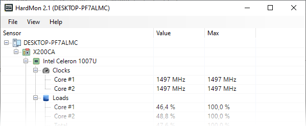

HardMon is a lightweight and efficient system monitor that displays real-time hardware stats in a clean, categorized layout. It tracks sensor readings for your CPU, GPU, memory, battery, storage, and network with precision. Running quietly in the background, HardMon also supports data export, refresh options, and interface customization—perfect for both casual users and IT enthusiasts.
Download HardMon (Windows x86-x64 bit)
| Version | Size | Support | Download |
| 2.1 (Rinjani Edition) | 1.63 MB | x86-x64 | Download |
| 2.0 (Summit Edition) | 1.69 MB | x86-x64 | Download |
| 1.23 (Sillicon Edition) | 1.55 MB | x86-x64 | Download |
| 1.20 (Dark Edition) | 1.53 MB | x86-x64 | Download |
| 1.0 (Initial Edition) | 1.51 MB | x86-x64 | Download |
Download HardMon SDK (HardMonLib.dll) .NET Library
| Version | Size | Support | Download |
| 2.7 | 126 KB | x86-x64 | Download |
| 2.5 | 278 KB | x86-x64 | Download |
| 2.4 | 125 KB | x86-x64 | Download |
| Read SDK Documentation | |||
System Requirements
- Windows operating system (Vista/7/8/8.1/10/11)
- Support both 32-bit and 64-bi

Key Features
- Real-Time Sensor Monitoring
- Continuously tracks and displays temperature, voltage, usage, fan speed, and battery health across multiple hardware components.
- Categorized Sensor Display
- Hardware sensors are shown in a clear, expandable layout grouped by component and type.
- Automatic Battery Report
- Automatically generates a detailed battery report using built-in Windows tools.
- Save Sensor Readings
- Export current monitoring data to a neatly formatted .txt file for logging or analysis.
- Custom Font and Grid Line Support
- Adjust the font and grid line used in the monitoring display to match your preferences.
- Manual Refresh
- Reloads and reinitializes hardware monitoring without restarting the program.
Monitoring Interface
- Sensors are displayed with the following columns:
- Sensor – The name or label of the hardware sensor.
- Value – The current reading (e.g., temperature, usage).
- Max – The highest recorded value.
- Each hardware component is grouped logically for better readability.
- Visual icons represent each category such as CPU, GPU, RAM, battery, storage, and more.
Hotkey
- Save/Export Monitoring data (CTRL + S)
- Change font (CTRL + F)
- Set On Top (CTRL + SHIFT + T)
- Refresh (CTRL + R)
- Show Content (F1)
Troubleshooting ?
- Battery report not generated ?
- Ensure the program is run as Administrator.
- No sensor data visible ?
- Check whether hardmonlib.dll is in the same folder as the program.
- Export fails ?
- Verify you have write permission in the selected folder.
Copyright (c) 2015 - 2025 Ari Sohandri Putra. All rights reserved.
License terms
| Support Development | ||
|


| arisohandriputra@gmail.com |
| Quick Access |
| Homepage * Active |
| SDK Documentation |
| Author |
| Tag |
| Hardware Microsoft Windows CPU GPU RAM HDD Display Monitor Clock Load Temperature Power |